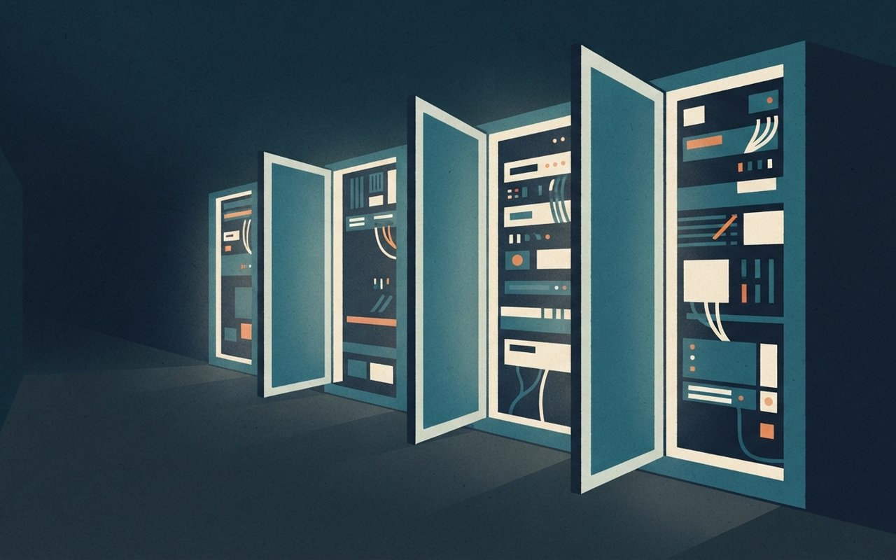
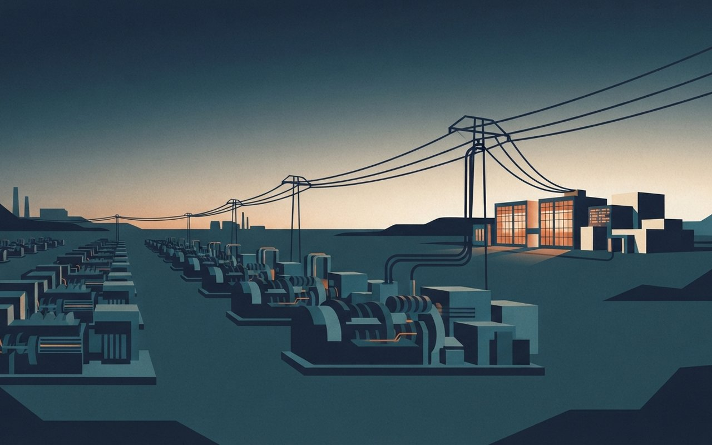

🎧 낭독 원고 보기
11월 9일 월요일, AI 브리프입니다. 주말 사이 쌓인 테크 소식 여섯 가지를 전해 드립니다. 앱, 보안, 반도체, 인프라 순서입니다.
먼저 앱입니다. Anthropic이 Claude의 개인금융 베타를 공개했습니다. 은행과 카드 계좌를 연결해 소비를 분석하는 기능입니다. 읽기 전용이라 송금이나 투자는 할 수 없고, Claude가 보는 것은 계좌번호 끝 네 자리, 잔액, 한도, 최대 2년치 거래내역입니다. 미국 Pro, Max, Ultra 구독자부터 단계적으로 열리며 한국 출시는 언급이 없습니다. 테크크런치 보도입니다.
보안 소식 두 가지입니다. 보안업체 Apiiro는 공개 저장소의 Claude Code 설정 파일 10만 4천여 개를 조사해 그중 1,122개에서 비밀정보를 찾았다고 밝혔습니다. 다시 묻지 않기를 고르면 입력한 비밀번호가 파일에 저장될 수 있다는 내용입니다. 더해커뉴스 보도이고 Anthropic의 입장은 확인되지 않았습니다.
또 Censys는 오픈소스 자율 침투테스트 도구 Artex 배포본 800여 개가 암호 없이 열려 있었다고 밝혔습니다. 크라우드스트라이크는 9월 한국 금융권 공격에 이 도구가 쓰였다고 귀속했습니다. 공격 다수는 약한 비밀번호와 다중인증 부재를 악용했습니다. 테크크런치 보도입니다.
반도체입니다. 엔비디아 AI 데이 서울이 9일과 10일 코엑스에서 열립니다. 첫날 15개 세션에서 삼성전자와 SK하이닉스, LG전자가 AI를 공정과 로봇에 쓰는 방법을 발표합니다. 행사 전 보도라 실제 발표 내용은 이후 기사로 확인해야 합니다.
마이크로칩 CEO는 AI 기업들이 공장을 통째로 차지했다고 말했습니다. 표준 제품 납기가 4에서 8주였는데 6주에서 32주로 늘었고, 주가는 4일 종가보다 22.55퍼센트 낮아졌습니다. 24/7 월스트리트 보도입니다.
마지막은 전력입니다. 파이낸셜타임스 보도에 따르면 Anthropic이 캐터필러 가스발전기 1.7기가와트분을 약 34억 달러에 인수했습니다. 확인 전 보도입니다. 한편 구글은 크루소의 와이오밍 데이터센터 부지를 넘겨받아 170억 달러를 투자하기로 했습니다.
지금까지 11월 9일 AI 브리프였습니다. 자세한 내용과 출처는 카드뉴스에서 확인하세요.
帳
앱 · 개인금융
Claude, 은행·카드 계좌를 읽는다 — 개인금융 베타, 최대 2년치 거래내역을 읽기 전용으로
TechCrunch에 따르면 Anthropic이 Claude의 개인금융(Personal Finance) 베타를 공개했다. 은행·카드 계좌를 Plaid로 연결해 소비를 분석하는 기능이고, 읽기 전용이라 송금·계좌 관리·투자는 할 수 없다. Claude가 보는 정보는 은행명, 계좌명·유형, 계좌번호 끝 4자리, 잔액, 한도, 최대 2년치 거래내역이다.
개인금융 허브 대화는 모델 학습에 쓰지 않고, 광고·제휴 추천이 없으며 자체 카드·대출·적금 상품도 없다고 했다. 대상은 미국 Pro·Max·Ultra 구독자이고 발표 주간부터 단계적으로 열린다. TechCrunch는 OpenAI가 2026년 5월 비슷한 ChatGPT 개인금융 기능을 냈다고 썼다. 한국 출시는 언급이 없다.
- 연결Plaid로 은행·카드 계좌 연결 · 읽기 전용(송금·관리·투자 불가)
- 보이는 정보은행명 · 계좌명·유형 · 계좌번호 끝 4자리 · 잔액 · 한도 · 최대 2년치 거래내역
- 데이터 취급허브 대화는 학습에 미사용 · 광고·제휴 추천 없음 · 자체 금융 상품 없음
- 대상·시점미국 Pro·Max·Ultra 구독자 · 발표 주간부터 단계 출시
- 경쟁OpenAI ChatGPT 개인금융 기능 2026년 5월(TechCrunch)
- 확인 한계TechCrunch 단일 · Anthropic 공식 블로그 미열람 · 한국 출시 여부 미확인 ⚠ 변동 가능
🤖 알고 보면 달라지는 것
보이는 정보가 '끝 4자리와 2년치 거래'까지이고 송금은 못 한다는 점이 핵심이다. 편해지는 만큼 어떤 데이터가 연결되는지부터 확인하게 된다. 한국에서 쓸 수 있는지는 기사에 없다.
TechCrunch — Claude 개인금융
TechCrunch(11/5 10:00 PST) 단일 매체 · 공식 블로그 미확인, 한국 출시 언급 없음 (확인 2026-11-09)
Claude, 내 계좌 내역
2년치를 읽는다
Anthropic이 은행·카드 계좌를 연결해 소비를 분석하는 개인금융 베타를 냈어요. 최대 2년치 내역을 읽지만 읽기 전용이라 송금은 못 해요.
끝 4자리|Claude에 보이는 계좌번호
미국 Pro·Max·Ultra 구독자 대상 / 한국 출시는 언급 없음
A calm desk with a tablet showing abstract soft colored spending bars and a small padlock beside it, conceptual schematic, not a real photograph, no text, no logos
鍵
보안 · 설정 파일
'다시 묻지 않기' 한 번에 비밀번호가 파일로 — Claude Code 설정 파일 1,122개에서 비밀정보 발견
The Hacker News에 따르면 보안업체 Apiiro는 Claude Code의 .claude/settings.local.json 파일을 조사했다. "Yes, and don't ask again"을 고르면 입력한 비밀번호·토큰이 든 명령 전체가 이 파일에 저장될 수 있다. 공개 저장소 103,617곳에서 파일 사본 104,185개를 찾았고, 그중 1,122개(약 1.1%)에 비밀정보 총 1,379개가 들어 있었다.
내역은 DB 비밀번호 379개, SSH 로그인 43개, GitHub·GitLab·npm 토큰 42개, AWS 키 23개 등이며 소유 조직은 63곳이다. 비교한 코딩 에이전트 16종 중 전체 명령을 프로젝트 파일에 기본 저장하는 것은 Claude Code뿐이었다. gitleaks는 564개, TruffleHog는 643개만 탐지했고 215개는 둘 다 놓쳤다. 수정은 보고되지 않았고 Anthropic의 답은 없었다.
- 조사 대상공개 저장소 103,617곳 · 설정 파일 사본 104,185개(Apiiro)
- 결과비밀정보 든 파일 1,122개(약 1.1%) · 비밀정보 1,379개 · 소유 조직 63곳
- 내역DB 비밀번호 379 · SSH 43 · GitHub·GitLab·npm 토큰 42 · AWS 키 23 등
- 비교에이전트 16종 중 전체 명령을 프로젝트 파일에 기본 저장하는 것은 Claude Code뿐
- 탐지gitleaks 564개 · TruffleHog 643개 · 둘 다 놓친 것 215개
- 확인 한계The Hacker News 단일(Apiiro 보고서 전달) · Apiiro 원문 미열람 · Anthropic 입장 미확인 ⚠ Apiiro 조사 기준
🤖 알고 보면 달라지는 것
기존 스캐너는 명령줄에 직접 친 비밀번호를 놓치는 경우가 많았다. 일반적인 보안 권고로는 승인을 명령 패턴 단위로 하고 비밀은 환경변수나 시크릿 매니저로 넣는 것이 안전하다. 노출됐다면 파일을 지우기 전에 키부터 교체해야 한다.
The Hacker News — 설정 파일 비밀 노출
The Hacker News(11/7) 단일 매체 · Apiiro 원문·Anthropic 입장 미확인, 수치는 Apiiro 조사 기준 (확인 2026-11-09)
'다시 묻지 않기'가
비밀번호를 남겼다
Apiiro가 Claude Code 설정 파일을 조사했어요. 공개 저장소 파일 중 1,122개에 비밀번호·토큰이 그대로 들어 있었어요.
1,122개|비밀정보가 든 설정 파일(104,185개 중)
Apiiro 조사 기준 / 단일 출처
An abstract glowing file folder with a small key shape slipping out of it onto a dark surface, conceptual schematic, not a real photograph, no text, no logos
盾
보안 · 해킹 도구
AI 자동 해킹 도구 Artex 800여 개가 암호 없이 노출 — 한국 금융권 공격에 쓰인 도구
TechCrunch에 따르면 보안업체 Censys의 수석 연구원 Silas Cutler가 오픈소스 자율 침투테스트 도구 Artex의 배포본 800여 개가 암호 없이 웹에서 접근 가능한 상태임을 찾았다. Artex는 7월 공개됐고, 노출물에는 피해 네트워크에 상주시키는 임플란트 같은 공격 도구가 들어 있었다. Cutler는 모두 악성은 아니며 허가받은 테스터도 쓴다고 했다.
CrowdStrike는 9월 한국 금융권 공격을 중국어권 해커의 Artex 사용으로 귀속했고, Censys가 확인한 열린 디렉터리에는 한국 은행뿐 아니라 결제·게임사 자료도 있었다. Microsoft는 10월 초 IT 지원업체 ConnectWise 공격에도 Artex가 쓰였다고 밝혔다. 공격 다수는 약하거나 알려진 비밀번호와 다중인증 부재를 악용했다. Artex는 비공개 전환을 발표했지만 사본 수십 개가 남아 있다.
- 노출Artex 배포본 800여 개 · 암호 없이 웹 접근(Censys)
- 도구7월 공개 오픈소스 자율 침투테스트 도구 · 노출물에 상주용 임플란트 등 포함
- 국내 관련CrowdStrike: 9월 한국 금융권 공격을 중국어권 해커의 Artex 사용으로 귀속
- 기타 사례Microsoft: 10월 초 ConnectWise 공격에 사용
- 원인약하거나 알려진 비밀번호 · 다중인증 부재 악용
- 확인 한계TechCrunch 단일(Censys·CrowdStrike·Microsoft 발표 전달) · Censys 원문 미열람 ⚠ 변동 가능
🤖 알고 보면 달라지는 것
피해의 직접 원인은 AI가 아니라 약한 비밀번호와 다중인증 부재였다는 점이 눈에 띈다. 해커의 도구도 설정 실수로 열려 있었다. 도구가 비공개로 바뀌어도 이미 퍼진 사본이 수십 개 남아 있다.
TechCrunch — Artex 노출
TechCrunch(11/6 10:44 PST) 단일 매체 · Censys 원문 미확인 (확인 2026-11-09)
AI 해킹 도구 Artex,
암호 없이 열려 있었다
Censys가 자율 해킹 도구 Artex 배포본 800여 개가 암호 없이 열린 것을 찾았어요. CrowdStrike는 한국 금융권 공격에 쓰였다고 봤어요.
800여 개|암호 없이 노출된 Artex 배포본
공격 다수는 약한 비밀번호·다중인증 부재 악용 / 단일 출처
A row of abstract server doors standing open in a dark corridor with faint light spilling out, conceptual schematic, not a real photograph, no text, no logos

場
반도체 · 행사
엔비디아 'AI 데이 서울' 9~10일 코엑스 — 삼성·SK하이닉스·LG전자가 '공정·로봇'에 AI를 쓰는 법 발표
아이티데일리와 ZDNet Korea에 따르면 엔비디아 'AI Day Seoul 2026'이 9~10일 코엑스에서 열린다. 첫날에는 피지컬 AI·로보틱스, 에이전틱 AI, AI 인프라 세 분야에서 15개 세션이 진행된다. 삼성전자는 PhysicsNeMo로 유체·열·구조 해석 시간을 줄이는 방안을, SK하이닉스는 PhysicsNeMo·CUDA-X로 소자·공정 시뮬레이션을 가속하는 방법을 발표한다.
LG전자는 Isaac GR00T로 공장 데이터를 로봇 학습에 쓰는 사례를, SK텔레콤은 DSX 레퍼런스 설계 기반 AI 팩토리 구축·운영을 발표한다. SK그룹은 엔비디아와 최대 2GW 규모 AI 팩토리 의향서(LOI)를 맺었고, SKT는 2027년부터 베라 루빈을 단계 도입할 계획이다. SK하이닉스는 10일 용인 트리니티팹 프레스 투어를 연다. ZDNet Korea에 따르면 엔비디아 매디슨 황(젠슨 황 CEO 장녀)의 방한은 직전에 취소됐고 사유는 기사에 없다.
- 행사엔비디아 AI Day Seoul 2026 · 11/9~10 · 코엑스
- 첫날3개 분야 15개 세션(피지컬 AI·로보틱스 / 에이전틱 AI / AI 인프라)
- 국내 3사삼성전자 PhysicsNeMo 해석 · SK하이닉스 PhysicsNeMo·CUDA-X 공정 시뮬레이션 · LG전자 Isaac GR00T 로봇 학습
- SKSK그룹–엔비디아 최대 2GW AI 팩토리 LOI · SKT 2027년부터 베라 루빈 단계 도입 · 하이닉스 10일 용인 트리니티팹 프레스 투어
- 변수매디슨 황(젠슨 황 CEO 장녀) 방한 취소(ZDNet Korea, 사유 미표기)
- 확인 한계발표 사전 보도 — 실제 내용은 행사 뒤 기사로 확인 필요 ⚠ 변동 가능
🤖 알고 보면 달라지는 것
국내 3사 발표 주제가 모두 AI를 만드는 일이 아니라 제조·공정·로봇에 쓰는 일이라는 점이 눈에 띈다. 반도체 회사가 반도체 설계 자체에 AI를 쓰는 사례도 포함된다. 이 카드는 행사 전 보도라 발표 결과는 담지 못했다.
아이티데일리 — 세션·발표 주제 ZDNet Korea — 일정·방한 취소
아이티데일리(11/8 09:01)·ZDNet Korea(11/8 13:33, 17:55 갱신) 두 매체 일정 일치 · 행사 전 사전 보도 (확인 2026-11-09)
엔비디아 AI 데이
서울, 9~10일 개막
엔비디아 행사가 코엑스에서 열려요. 삼성전자·SK하이닉스·LG전자는 AI를 공정 시뮬레이션과 로봇 학습에 쓰는 방법을 각각 발표해요.
15개|첫날 세션(3개 분야)
행사 전 사전 보도 / 발표 결과는 행사 뒤 확인 필요
A bright conference hall with abstract glowing circuit patterns projected on a large stage screen, conceptual schematic, not a real photograph, no text, no logos
缺
반도체 · 납기
마이크로칩 CEO "AI 고객이 공장을 통째로 차지했다" — 표준 제품 납기 4~8주에서 6~32주로
24/7 Wall St.에 따르면 마이크로칩의 Steve Sanghi CEO는 5일 실적 발표에서 AI 기업들이 "공장 전체를 차지하고 모두를 밀어냈다"고 말했다. 표준 제품 납기는 4~8주에서 6~32주로 늘었다. 주가는 5일 13.92%, 6일 10.02% 내려 58.35달러가 됐고, 4일 종가 75.34달러보다 22.55% 낮다.
9월 분기 매출은 16.22억 달러로 전분기보다 9.2%, 전년보다 42.2% 늘었다. 데이터센터 매출은 2.5억 달러를 넘어 55.7% 늘었고 올해 10억 달러 달성 궤도다. 12월 분기 매출 가이던스는 15.73억~16.38억 달러다. 기사는 부족이 AI 칩이 아니라 표준(범용) 제품에서 나타났다고 짚는다.
- 발언AI 고객이 "공장 전체를 차지하고 모두를 밀어냈다"(5일 실적 발표)
- 납기표준 제품 4~8주 → 6~32주
- 주가5일 -13.92% · 6일 -10.02%(58.35달러) · 4일 종가 75.34달러 대비 -22.55%
- 9월 분기매출 16.22억 달러(전분기 +9.2% · 전년 +42.2%) · 데이터센터 2.5억 달러+(+55.7%)
- 전망12월 분기 매출 가이던스 15.73억~16.38억 달러
- 확인 한계24/7 Wall St. 단일 · 회사 보도자료·실적 콜 원문 미열람 · 주가 급락은 같은 주 칩 전반 매도와 겹침 ⚠ 변동 가능
🤖 알고 보면 달라지는 것
매출은 늘었는데 주가가 급락한 이유는 기사가 납기 악화와 같은 주 칩 매도장을 함께 짚는다. 칩 부족이 AI 칩이 아니라 평범한 칩에서 재발했다는 점이 새롭다. 이 카드는 투자 권유가 아니다.
24/7 Wall St. — 마이크로칩 실적
24/7 Wall St.(11/7 08:46 ET) 단일 매체 · 회사 원문 미확인, 증시 전반 수치는 싣지 않음 (확인 2026-11-09)
범용 칩 납기가
6~32주로 늘었다
마이크로칩 CEO는 AI 고객이 공장을 통째로 차지했다고 말했어요. 표준 제품 납기가 4~8주였는데 6~32주까지 크게 늘었어요.
22.55%|4일 종가 대비 주가 하락(6일 58.35달러)
AI 칩이 아닌 범용 칩 부족 / 단일 출처
A factory conveyor line where one huge glowing tray crowds out many small chips waiting in a queue, conceptual schematic, not a real photograph, no text, no logos
電
인프라 · 전력 확보
AI 전기 확보전 — Anthropic 가스발전기 1.7GW 약 34억 달러(FT 보도), 구글은 와이오밍 부지에 170억 달러
CNBC·TNW가 인용한 FT 보도에 따르면 Anthropic은 9월 말 OnePWR Solutions와 계약해 캐터필러 발전기 1.7GW분을 약 34억 달러에 인수했다. 전력을 사려던 계획이 바뀌어 OnePWR가 약 2년 전 넣은 캐터필러 주문과 설치 작업을 넘겨받는 구조이고, OnePWR 인수나 직원 이동은 없다. 설치 부지는 공개되지 않았고, 양사는 논평 요청에 응하지 않았으며 로이터는 즉시 확인하지 못했다.
TechCrunch에 따르면 Crusoe(기업가치 309억 달러)는 미완성 와이오밍 남동부 데이터센터를 구글에 매각한다. 구글은 이 부지에 170억 달러를 투자하며 계획 규모는 최대 10GW이고 매각가는 미공개다. 구글이 크루소 운영의 비용·공기를 우려한 것으로 전해졌고, 기사는 독립 개발사가 장비·전력 확보와 지역 반대로 어려움을 겪는다고도 덧붙였다. 칩보다 전기가 병목이라는 신호지만, Anthropic 건은 확인 전 보도다.
- Anthropic(FT)캐터필러 발전기 1.7GW분 약 34억 달러 · OnePWR의 주문·설치 작업 인수 · 9월 말 계약
- 규모부지 미공개 · 양사 논평 요청에 응하지 않음(CNBC)
- Crusoe→구글와이오밍 남동부 미완성 데이터센터 매각 · 구글 170억 달러 투자 · 최대 10GW · 매각가 미공개
- Crusoe기업가치 309억 달러 · 구글용 텍사스 아마릴로 센터는 계속 건설
- 확인 한계Anthropic 건은 FT 단일 익명 출처(CNBC·TNW 인용), 로이터 미확인 · IPO 가치 등은 매체별 수치가 달라 싣지 않음 ⚠ 변동 가능
🤖 알고 보면 달라지는 것
신규 가스발전기는 주문 뒤 대기가 길어, 남이 넣어 둔 주문을 가져오는 방식이 등장했다. 독립 개발사가 풀지 못한 부지를 구글이 직접 떠안은 것도 같은 맥락이다. 두 건 모두 칩보다 전기가 병목이라는 신호이고, Anthropic 건은 확정 보도가 아니다.
CNBC — Anthropic 발전기 계약 TNW — 구조·OnePWR TechCrunch — Crusoe 와이오밍
CNBC(11/8 08:50 ET)·TNW(11/8) 모두 FT 인용 단일 익명 출처, 로이터 미확인 · Crusoe 건은 TechCrunch(11/6 17:40 PST) 단일 (확인 2026-11-09)
AI 전기 확보전,
발전기 1.7GW 인수
FT 보도에 따르면 Anthropic이 가스발전기 1.7GW분을 약 34억 달러에 인수했어요. 구글도 와이오밍 부지에 170억 달러를 투자해요.
OnePWR|캐터필러 발전기 주문|Anthropic
34억 달러|발전기 1.7GW 인수가(FT 보도)
Anthropic 건은 확인 전 보도 / 로이터 미확인
Rows of large industrial gas turbine generators on a dark site at dusk with a power line leading to a glowing data center, conceptual schematic, not a real photograph, no text, no logos
